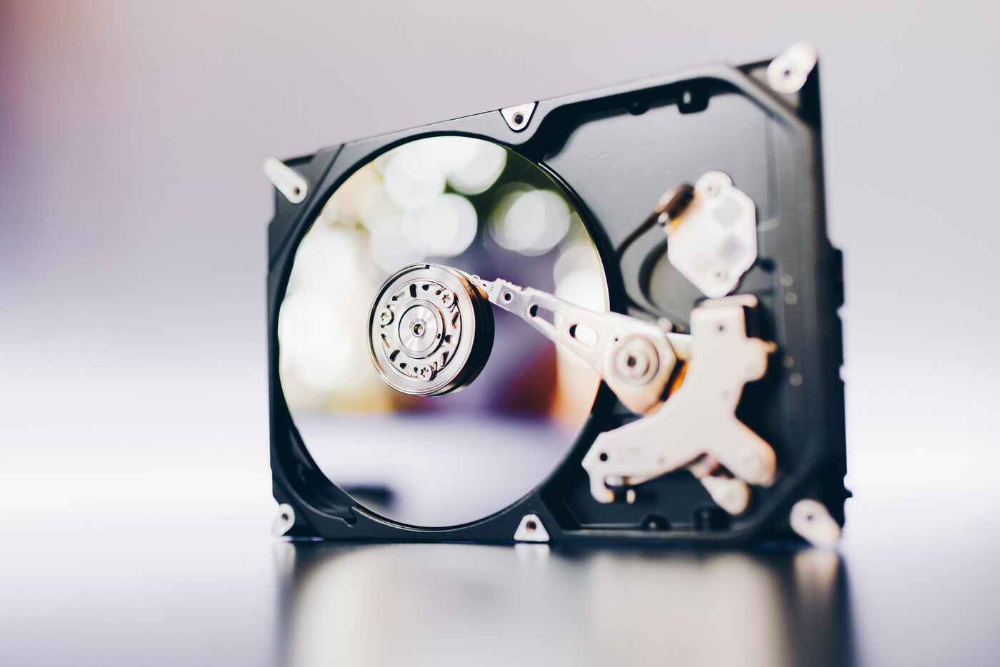

Récupération de données à Florennes et en Wallonie
Photos de famille, documents importants, souvenirs irremplaçables : la perte de données est toujours un choc. Avant de paniquer ou de tout réinstaller, faites appel à Mick Computer.

Dans quels cas peut-on récupérer vos données ?
Beaucoup de situations qui semblent désespérées sont en réalité récupérables. Nous traitons notamment :
- Fichiers ou dossiers supprimés par erreur
- Disque dur ou SSD qui ne s'ouvre plus, qui « clique » ou n'est plus reconnu
- Clé USB ou carte mémoire illisible
- Formatage accidentel ou réinstallation involontaire
- PC ou Mac en panne dont il faut sauver le contenu
- Données inaccessibles après un virus ou une coupure de courant
Une approche prudente, étape par étape
La première règle en récupération de données : ne pas aggraver la situation. Plus on continue à utiliser un support défaillant, plus les chances diminuent. Nous évaluons d'abord l'état du support, puis nous vous indiquons ce qui est récupérable et à quelles conditions avant d'aller plus loin.
Vos souvenirs comptent
Photos, vidéos, documents administratifs, comptabilité d'indépendant… On met tout en œuvre pour récupérer ce qui compte le plus pour vous, en toute confidentialité.
Un conseil : la sauvegarde
Après récupération, nous pouvons aussi mettre en place une solution de sauvegarde simple pour ne plus jamais revivre ça. Intervention à domicile partout en Wallonie.
Un souci ? Parlons-en.
Réponse rapide, taux horaire clair.